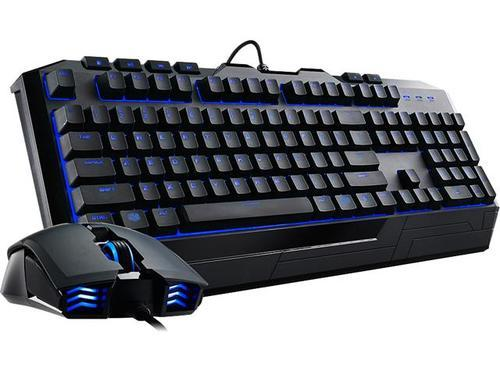
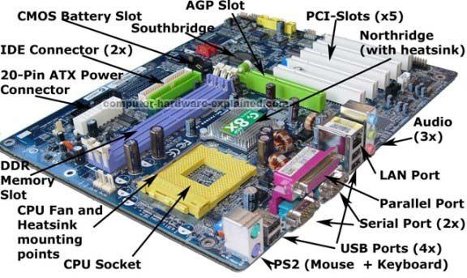
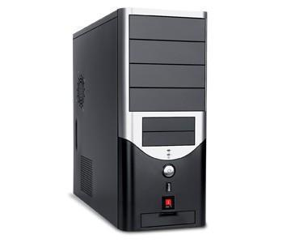

Computer
Keyboard
Motherboard
CPU
- A computer is a machine that can be instructed to carry out sequences of arithmetic or logical operations automatically via computer programming. Modern computers have the ability to follow generalized sets of operations, called programs. These programs enable computers to perform an extremely wide range of tasks.
- Keyboard

-
A computer keyboard is a typewriter-style device which uses an arrangement of buttons or keys to act as mechanical levers or electronic switches.
Following the decline of punch cards and paper tape, interaction via teleprinter-style keyboards became the main input method for computers.
Keyboard keys (buttons) typically have characters engraved or printed on them,better source needed] and each press of a key typically corresponds to a single written symbol.
However, producing some symbols may require pressing and holding several keys simultaneously or in sequence.
While most keyboard keys produce letters, numbers or signs (characters), other keys or simultaneous key presses can produce actions or execute computer commands.
TOP
- Motherboard

-
A motherboard (alternatively known as the mainboard, main circuit board, system board, baseboard, planar board or logic board, or colloquially, a mobo) is the main printed circuit board (PCB) found in general purpose computers and other expandable systems. It holds, and allows, communication between many of the crucial electronic components of a system, such as the central processing unit (CPU) and memory, and provides connectors for other peripherals.
TOP
- CPU [Processor]

-
A central processing unit (CPU), also called a central processor or main processor, is the electronic circuitry within a computer that executes instructions that make up a computer program.
The CPU performs basic arithmetic, logic, controlling, and input/output (I/O) operations specified by the instructions in the program. The computer industry used the term "central processing unit" as early as 1955
.Traditionally, the term "CPU" refers to a processor, more specifically to its processing unit and control unit (CU), distinguishing these core elements of a computer from external components such as main memory and I/O circuitry.
TOP